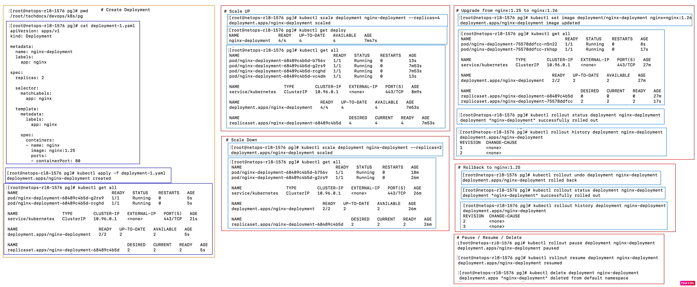

Let's say you have a Pod running V1 of an application;
Your team has developed V2 and you would like upgrade the Pod with V2?
How would you upgrade the pods with latest version?
How about rolling back, if you find any issues with V2?
Can Replicaset handle Rollout and Rollback? Not really!
Deployment does it!
apiVersion: apps/v1
kind: Deployment
metadata:
name: nginx-deployment
namespace: default
labels:
app: nginx
environment: production
spec:
replicas: 3
selector:
matchLabels:
app: nginx
strategy:
type: RollingUpdate # It specifies the strategy for rolling updates: RollingUpdate and Recreate;
rollingUpdate: # With 5 replicas, maxUnavailable: 1, maxSurge: 1, it ensures atleast 4 pods and atmost 6 pods are running at any time;
maxUnavailable: 1 # It specifies the maximum number of Pods that can be unavailable during the update; Defaults to 25%;
maxSurge: 1 # It specifies the maximum number of extra Pods that can be created during the update; Defaults to 25%;
minReadySeconds: 10
revisionHistoryLimit: 5
progressDeadlineSeconds: 600
template:
metadata:
labels:
app: nginx
spec:
containers:
- name: nginx-container
image: nginx:1.25
ports:
- containerPort: 80
minReadySeconds: 10
- It specifies the minimum number of seconds a Pod should be in ready state before it is considered ready for the deployment;
- Sometimes, a Pod becomes ready quickly, but it crashes soon after that;
- In such cases, we can set minReadySeconds to a higher value, to consider the Pod as ready;
revisionHistoryLimit: 5
- It specifies the number of old versions to retain in the history; Defaults to 10;
progressDeadlineSeconds: 600
- It specifies the maximum number of seconds to wait before marking the deployment as failed; Defaults to 600 seconds(10 minutes);
Recreate Strategy:
- It deletes all the old ReplicaSets first, and then creates new ReplicaSets with the new version of the image;
- It causes downtime during the update;
- It is useful for applications that cannot run multiple versions simultaneously;
- For eg:
-- Database schema changes;
-- Applications using shared state; That can corrupt the data;
Default Strategy:
type: RollingUpdate
rollingUpdate:
maxUnavailable: 25%
maxSurge: 25%
